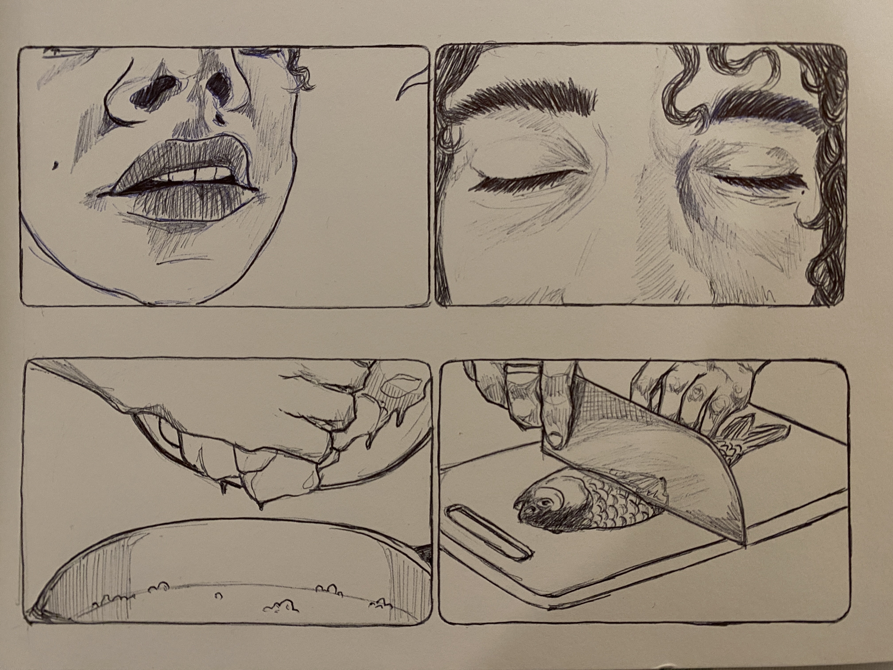
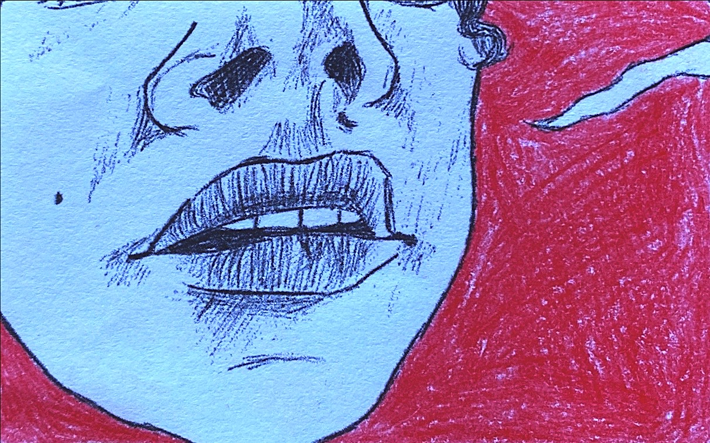
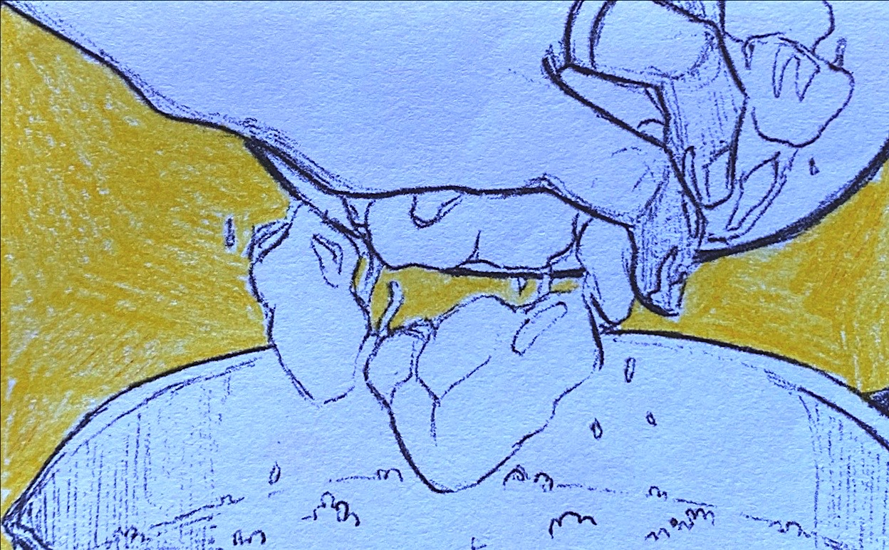
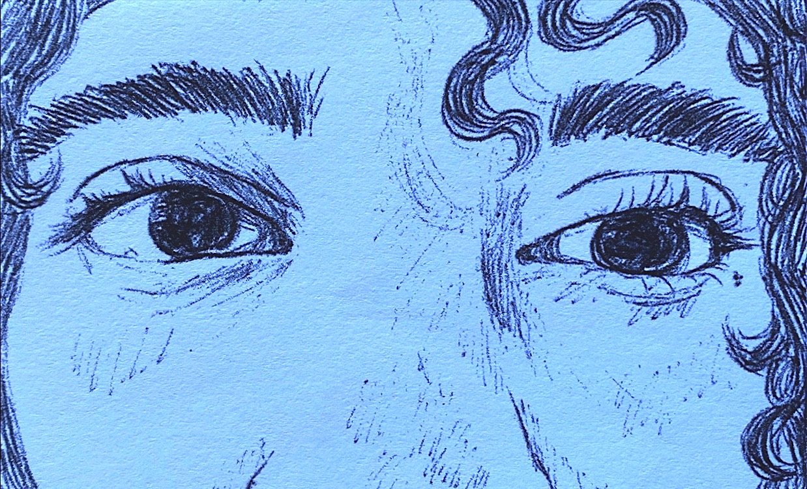
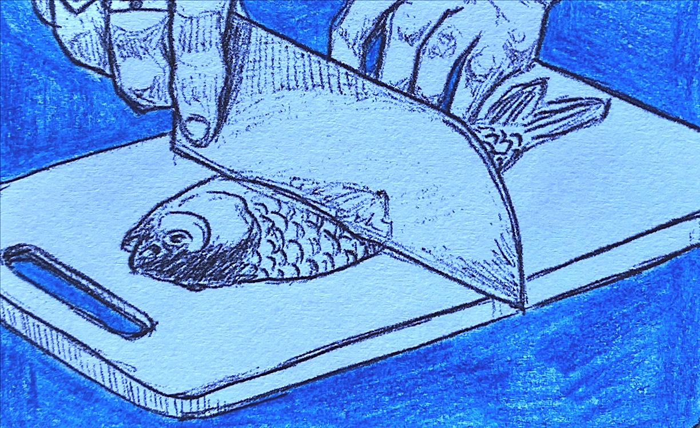
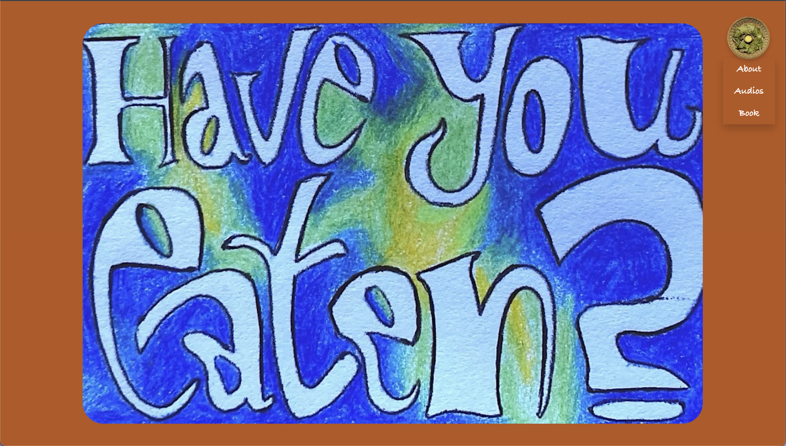
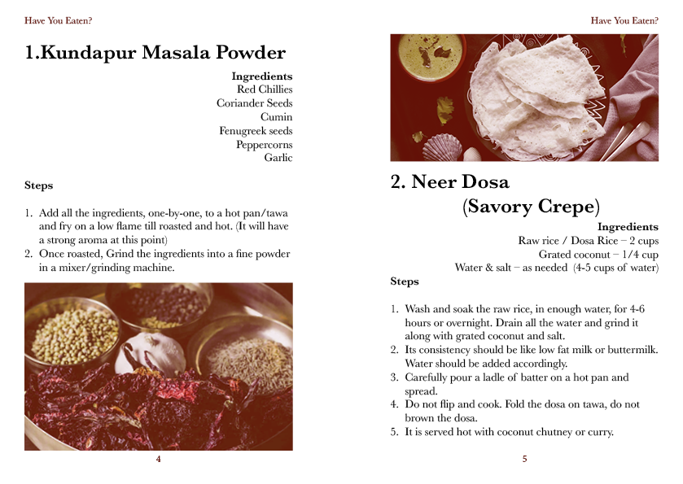
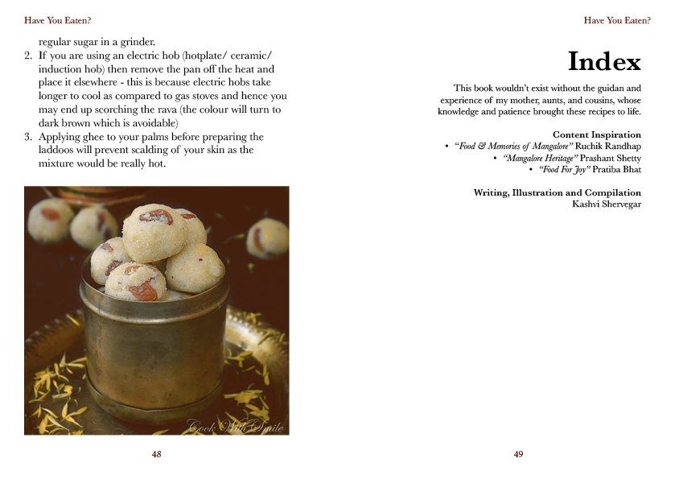
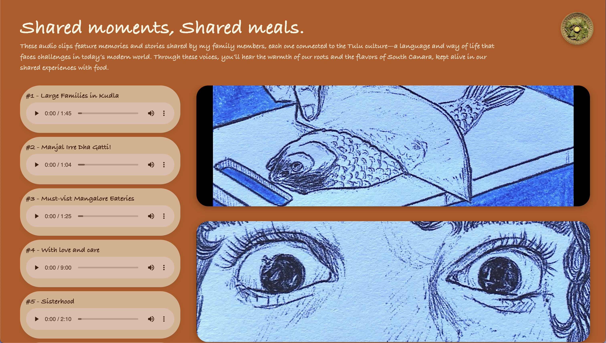

Have You Eaten?
'Have You Eaten?' is a space dedicated to the warmth and nostalgia of South Canara's coastal foods. Inspired by the Tulu phrase "Vanas Aanda? (ವನಸ್ ಆಂಡಾ?)"—a friendly way to start a conversation by asking if someone has eaten—this site bridges food and memories.
This project includes a stop-motion introduction that captures the heart of this idea, a website with audio clips of my family members sharing their stories and favorite dishes, and a book full of those cherished recipes.
It isn't just about recipes; it's about preserving and sharing the bonds created around food, one story at a time.









